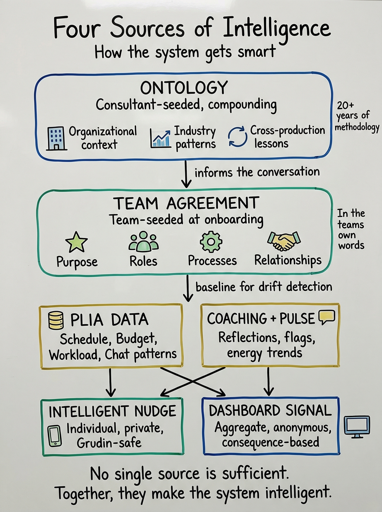
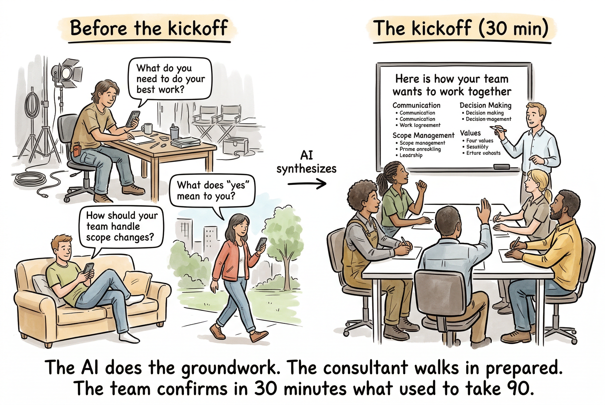
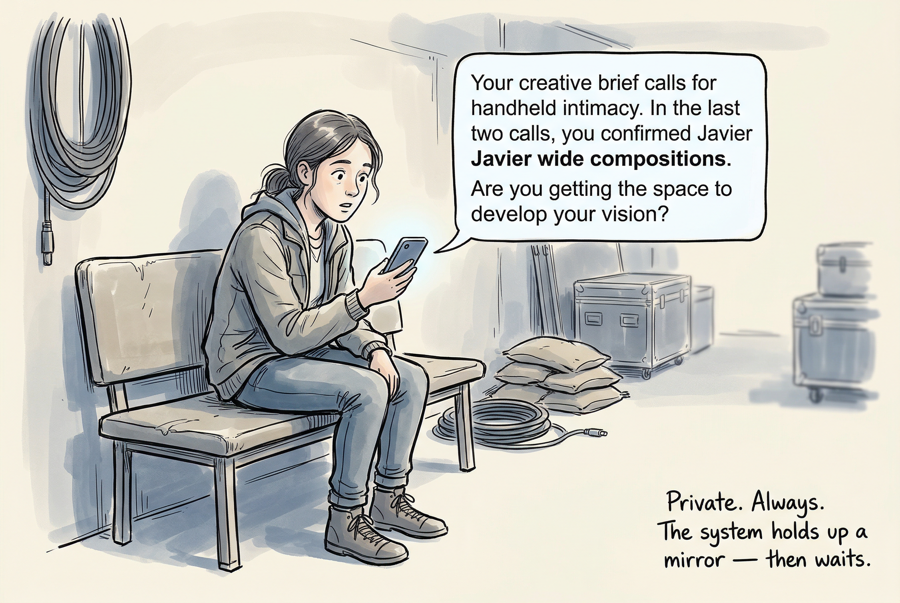
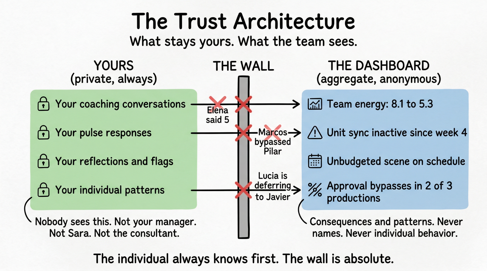
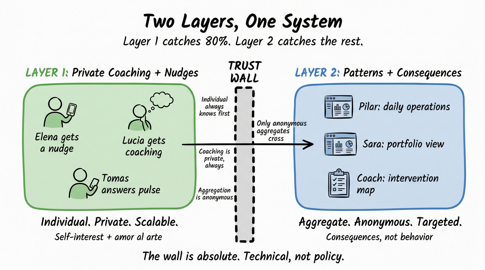
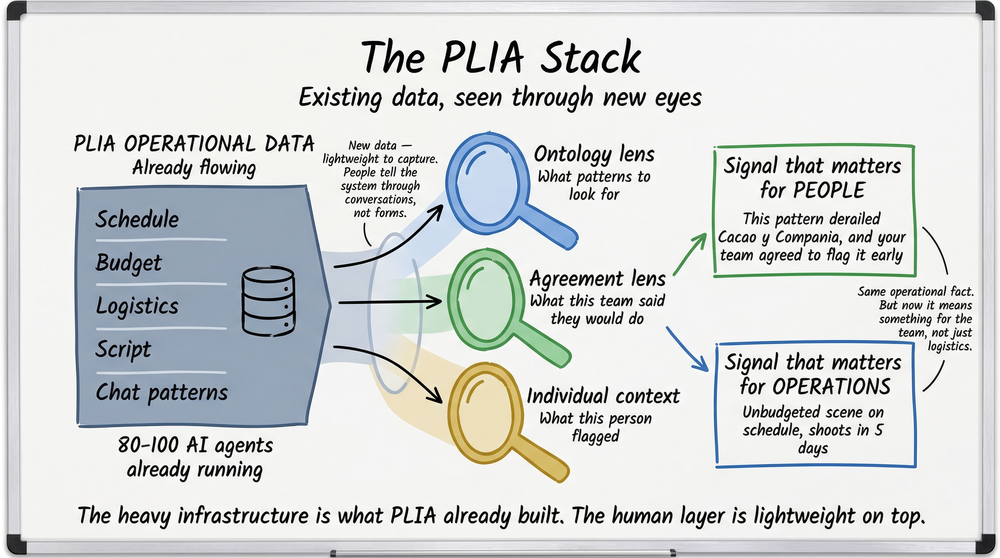

Product Thesis v2 — March 6, 2026
The HPT process made teams stop threatening to kill each other and start functioning. Our product makes that accessible for the first time — AI does the heavy lifting, one consultant covers all productions.
Making the HPT process accessible for the first time.
When Valentin and Anabel ran the HPT process with production crews, people stopped threatening to kill each other and started functioning as a team. That happened. But Sara doesn't have Valentin and Anabel in any of her seven productions. She has nothing.
The full HPT process requires a consultant embedded in each production — too expensive, too intrusive, too disruptive for a running crew. So Sara gets zero coverage of the human layer. No early warning. No team alignment. Nobody watching whether people are working the way they agreed to. She finds out about problems when they become crises.
Our product makes the HPT process accessible for the first time. The AI does the heavy lifting — onboarding prep, private coaching, monitoring, nudges. One consultant covers all productions.
The cost is a fraction of embedding a consultant per production. The intrusion is minimal — people talk to the AI on their phone.
The unit of transformation is the conversation. Everything we build exists to make conversations better, more frequent, or more grounded in reality.
The product's intelligence comes from four sources that build on each other.

An embedded consultant-engineer seeds the organizational context before any team touches the system — what iZen is, how productions work, typical failure patterns, when risks cluster, and 20+ years of Axialent methodology structured into the system's architecture.
The ontology includes cross-production lessons: "scene approval bypasses happen in month 1", "dual-unit syncs drop off in week 3-4", "in Cacao y Compania, adding a budget-check gate resolved it in a week."
The learning doesn't live in a report nobody reads. It lives inside the conversation where it matters.
The ontology compounds. Every production adds to it. By the 10th production, the system has organizational memory that no individual consultant could carry alone.
Before the team meets, the AI does the prep work — individual conversations with each person, async, on their phone:
"You're the production designer on Alfonso el Sabio. What do you need to do your best work?"
"In 3 of the last 5 productions, scene changes hit art departments without budget approval. How should your team handle that?"
"What does 'yes' mean when someone commits your department to something?"
The human consultant walks into the onboarding session already informed — they know what everyone said, where the tensions are, what the ontology flagged. One consultant, seven productions — because the AI did the groundwork.
The result is a living team agreement in the team's own words. It becomes the AI's baseline: when it observes drift, it measures against what this team said, not generic best practices.
PLIA already runs 80-100 AI agents processing schedule, budget, logistics, and script data. That operational layer becomes the intelligence multiplier — without building anything new. Schedule/budget mismatches, cascade risks, department workload, communication pattern shifts — all already tracked, now interpreted through the human-coordination lens.
What individuals share privately — reflections, pulse check-ins, coaching conversations — feeds back into the system's intelligence. Elena flagged "prep time" in week 2; two weeks later, her department is at 94% with a new scene landing. The nudge isn't a cold alert — it's informed by what she herself said.
This source is strictly private at the individual level. Only anonymous aggregates reach the dashboard.
No single source is sufficient. The ontology without team agreements is generic. Team agreements without operational data can't detect consequences. Operational data without the ontology can't interpret what a schedule gap means for this team. Coaching without the other three is just a chatbot asking "how are you?"
The user never sees the ontology, the data layer, or the agreement structure. They experience a private coach and a dashboard.

The coaching starts before day one — the AI's onboarding prep is the first coaching interaction. From there, the system continues in five modes:

The coach remembers what you said, notices patterns in your own reflections, and asks one question. Then it waits.
Sara runs multiple productions. She can't be in every room. Her dashboard shows her where to pay attention — consequences and patterns, never individual behavior.
| Production | Status | Key Signal | Days Open |
|---|---|---|---|
| Alfonso el Sabio | Yellow | Schedule/budget gap: scriptorium scene. Unit sync inactive. | 8 / 11 |
| Cacao y Compania | Yellow | Overdue: location permits. | 3 |
| CAPA Docuseries | Green | Clean. | — |
Pattern alert: "Scene approval bypasses in 2 of 3 productions — may indicate systemic gap in approval process across iZen."
What Sara doesn't see: who caused it, who was coached, who said what in their pulse, who ignored a nudge. She sees consequences and patterns. People, not the system, decide what to do about them.
The line producer gets the same data at daily-operations altitude. The consultant gets an intervention map. Same signals, three views.
The product dies if people feel watched.

If the system notices something about your behavior, it tells you before anyone else. Marcos is bypassing the approval process? Marcos gets the private nudge. If he doesn't act, the consequence — an unapproved scene on the schedule — surfaces on the dashboard. Not his behavior.
Your conversations, reflections, and pulse responses belong to you. Management never sees individual coaching data. The wall is technical, not policy.
Management sees "art department energy dropped from 8 to 5" — not "Elena said 5." The dashboard surfaces patterns, never names.

The onboarding conversation is also the transparency conversation. Spoken out loud, as a team: here's what the system observes, here's what it never does. Not new access. New interpretation.
PLIA agents do work — order props, track budgets, resolve logistics. PLIA Teams does nothing tangible. It holds up a mirror.
It never acts. It never escalates without your knowledge. It never does the hard conversation for you. The hard conversation is still hard. The system just makes it harder to avoid.
"We don't fix teams. We make it easier for teams to fix themselves — and harder to pretend everything's fine."
"You don't have to remember. We remind you, structurally."
A human-coordination layer on top of what PLIA already built.

PLIA's operational layer already processes schedule, budget, logistics, and script data. PLIA Teams adds a human-coordination layer: the ontology, team agreements, coaching history, and pulse signals.
This is new data — but it's lightweight to capture. People tell the system things through conversations, not forms. The ontology is seeded once per client by the consultant-engineer. The heavy infrastructure is what PLIA already built.
The real value: operational data that already exists gets reinterpreted through the human-coordination lens. "Unbudgeted scene on schedule" is an operational fact. Seen through the ontology and the team agreement, it becomes a signal that matters for people, not just logistics.
Today Sara has zero coverage of the human layer. With PLIA Teams, one consultant covers all seven productions.
The consultant:
The AI does the daily work — coaching, nudges, pulse, drift detection. The consultant does the judgment calls. Neither replaces the other.
AI-prepared onboarding + private coaching — immediate value, no infrastructure dependency
Lightweight signals feeding coaching and dashboard
Operational risk on Sara's dashboard
Step 1 works on day one with zero PLIA integration.
Every industry where teams coordinate complex work has the same pattern.
| Film Production | Software | Consulting | |
|---|---|---|---|
| What needs to be done | Scripts | PRDs / specs | SOWs / scopes |
| Who does what when | Movie Magic | Jira / Linear | Deliverable trackers |
| Resources | Movie Magic Budget | Roadmaps | Time tracking |
| Where people talk | Google Chat | Slack / Teams | Email / Teams |
| What's missing | The human layer | The human layer | The human layer |
Production is where we start — because PLIA gives us the data layer and Axialent gives us the methodology. The team agreement, the coaching, the pulse signals, and the trust architecture are industry-agnostic.
Sara couldn't afford this before. Now she can — and every production makes the next one smarter.
Jonathan Grudin's finding: if the people doing the work don't get direct personal benefit, they won't use the system. This is the single most common cause of death for team collaboration tools.
Our constraint: every interaction must give the person doing it something they want. The team-level intelligence is a byproduct of individuals getting value — never the other way around.
The product works without commitment extraction. It becomes a future intelligence upgrade that adds:
Start without it. Add it when real usage data tells you where it adds the most value.